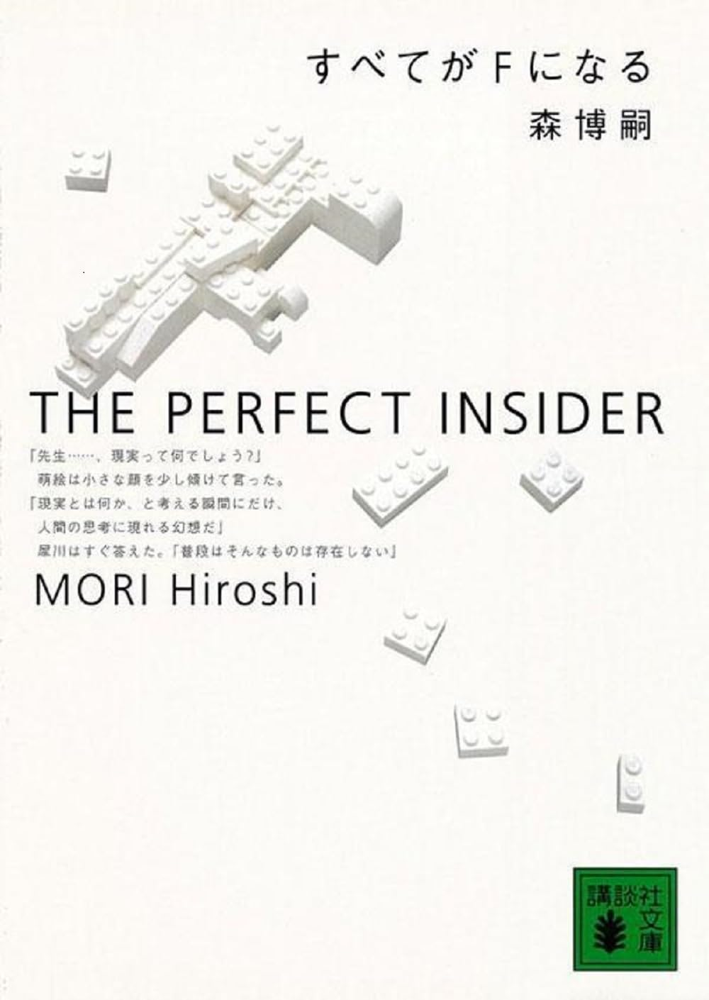
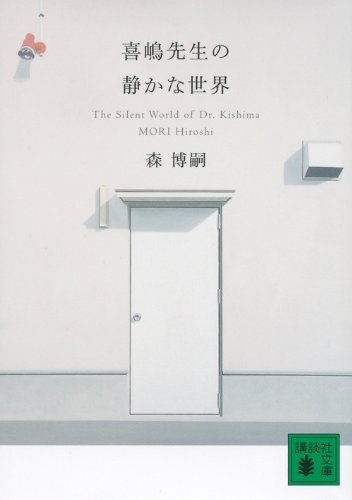

Mori Hiroshi
Profile
Hiroshi Mori is a Japanese author, engineer (Ph.D.), and former university professor. He was born in 1957 in Aichi Prefecture, Japan, and studied engineering at university. While working as an associate professor at Nagoya University, he made his literary debut in 1996 with the novel The Perfect Insider (Subete ga F ni Naru), which brought him immediate attention. Since then, he has written numerous novels, essays, and critical works, known for blending scientific insight with intellectual curiosity.
Mori's novels are known for being logical and intellectually stimulating mysteries. Rather than focusing solely on solving crimes, his stories often incorporate scientific topics, abstract concepts, and philosophical questions. In series like the S&M series and V series, the emphasis is often placed more on dialogue and thought processes than on traditional mystery elements like whodunits or dramatic reveals. A recurring theme in his work is the exploration of the boundary between reality and fiction, adding a reflective and often metafictional layer to his writing.
Introduction of his works
- 
The Perfect Insider (Subete ga F ni Naru) is the debut novel of Japanese author Hiroshi Mori, published in 1996. It is the first installment of the well-known "S&M Series," featuring the brilliant engineering professor Sohei Saikawa and his curious and intelligent student Moe Nishinosono. The story begins when the two protagonists visit a secluded research facility on a remote island. While there, a mysterious locked-room murder occurs involving a reclusive genius scientist. As Saikawa and Moe investigate, they unravel a series of cryptic clues and logical puzzles, leading to a highly intellectual and philosophical mystery. Renowned for its rational approach to storytelling, The Perfect Insider stands out as a cornerstone of "science-based mysteries" in Japan. The title itself—“What does the 'F' mean?”—adds to the intrigue, inviting readers to solve not just the murder, but the concept behind the mystery.
- 
Kijima-sensei's Quiet World (Kijima-sensei no Shizukana Sekai) is a contemplative and intellectual coming-of-age novel by Hiroshi Mori. Unlike traditional mysteries, this book contains no crime or complex plot twists. Instead, it offers a profound reflection on the beauty of devotion to knowledge, the quiet dignity of research, and the essence of intellectual life. The story follows a young engineering student at university who encounters the enigmatic and soft-spoken researcher Professor Kijima. Through their mentor-mentee relationship, the protagonist gradually learns not only how to conduct scientific research, but also how to find meaning in learning, thinking, and living quietly with purpose. Deeply inspired by Mori’s own experience as a researcher, the novel provides a rare, poetic glimpse into the inner world of academic life in Japan. It is a story about silent strength, intellectual humility, and the quiet passion of those who live for ideas rather than recognition.
-
The Queen's 100-Year Closed Room (Joō no Hyakunen Misshitsu) is a science fiction mystery novel by Hiroshi Mori and the first installment in his "Hundred Years Series." Unlike conventional detective fiction, this novel is set in a futuristic world and masterfully blends elements of mystery, science fiction, and philosophical inquiry. The story takes place in a secluded, self-contained nation known as a "Dominion," where a mysterious incident occurs in the sealed royal residence—a locked-room mystery with a sci-fi twist. Rather than focusing purely on physical tricks or clues, the novel explores profound themes such as existence, free will, artificial intelligence, and social constructs. This is not just a whodunit; it’s a philosophical mystery that questions the nature of reality, the future of society, and what it means to be human in a technologically advanced world. Thought-provoking and elegantly written, it’s one of Mori’s most unique and intellectually ambitious works.